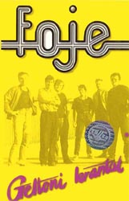

 |
geltoni krantai |
Įrašai daryti 1988 -1989 metais:
Vilniaus plokštelių studijoje (garso režisierius - Eugenijus Motiejūnas)
Privačioje įrašų studijoje Varšuvoje (garso režisierius - Andžejus Pučinskis)
FOJE studijoje Vilniuje (garso režisierius - Edmondas Babenskas)
Įrašus restauravo ir masteringą atliko Raimondas Trilikauskis įrašų studijoje M-1.
Dizainą "restauravo" Linas Mažeika
- Andrius Mamontovas – gitara (2, 4, 8, 9), pianinas (2, 7), klavišiniai (1, 3, 6), ritmo kompiuterio programos (3, 4), vokalai
- Arnoldas Lukošius – klavišiniai (1, 2, 5, 6, 7, 8, 9)
- Eugenijus Pugačiukas – akustiniai ir el. mušamieji (5, 7)
- Gediminas Simniškis – bosas (išsk. 5)
- Jaunius Beinortas – gitara (išsk. 5)
- Saulius Valikonis – saksofonas (3, 4, 8, 9)
- Robertas Meržvinskas – saksofonas (1, 2, 6, 7)
- Romas Rainys – klavišiniai (4), gitara (5)
- Gintautas Baltrukaitis – ritmo kompiuterio programos (2, 8, 9)
- Andžejus Pučinskis – ritmo kompiuterio programos (1, 6)
- Darius Burokas – klavišiniai (5)
ir vėl ateis ta klaiki žiema
ir aš numirsiu su medžiais kartu
nusišypsojęs sustingsiu lede
ir mano šypseną vėjas užpūs
kaip uždegt save
kai aplink žiema
kai aplink veidai
iškirsti lede
tai bus be galo šalta žiema
bet aš nejausiu jos pirštų aštrių
aš nematysiu kaip ges šviesa
aš nežinosiu kad jos neturiu
galbūt tai bus paskutinė žiema
galbūt daugiau niekada neatšils
ir ta ledinė klaiki šypsena
išliks ir jau niekada neištirps
GELTONI KRANTAI
galbūt šiandiena aš netoks
koks būt galėčiau jei supraščiau
žemiškus dėsnius ir tiesas
jei numatyčiau tai kas bus
jeigu atspėčiau kad lietus
nakčiai atėjus bels į langą
jeigu atspėčiau kad diena
bus apsiniaukus ir drėgna
geltoni krantai jūros begalybėj
žaidžiantys vaikai smėlio pilyse
mano pėdos ten dar neišsitrynė
kaip sugrįžt atgal kaip atgaut save
durys užvertos ir tyloj
lūpos šnabždės kažką nebyliai
šauksmas begarsis nuskambės
aš nežinau kas bus vėliau
viskas praėjo kas ateis
jeigu jau nieko nebeliko
jei paskutiniai traukiniai
pasieke tolimas stotis
ieškojau džiaugsmo tik jame
paskendo viltys paskutines
aš troškau degti ugnyje
bet dūmai nuodijo akis
nesitikėjau kad diena
pavirs į juodą tamsią naktį
aš taip ilgai žudžiau save
ir negalvojau kad pavyks
KITA DIENA
kita diena ateis kaip tūkstančiai kitų
kita diena ar kas pasikeis
kita diena ar vėl bus toks rūškanas dangus
kita diena ar ji bus giedra
kita diena galbūt ji jau aušta manyje
kita diena galbūt ji šalia
kita diena jau suplaka tūkstančiai sparnų
kita diena ar ji bus kita
aš nusijuoksiu tamsoje laimei
kuri mane aplenks
aš nusijuoksiu tamsoje sėkmei
kuri lydės mane
aš nusilenksiu tamsoje šviesai
kurią atneš diena
aš nusilenksiu tamsoje
tegu tik ateis
kita diena ar liks tas chaosas joje
kita diena ar kas išsispręs
kita diena sustingusios versmės ar pratrūks
kita diena o gal tai šiandien
aš nusilenksiu tamsoje vilčiai
kuri mane apgaus
aš nusilenksiu tamsoje mirčiai
kuri suras mane
aš nusilenksiu tamsoje meilei
kuri mane paliks
nebegaliu būt tamsoje
geriau jei ateis
kita diena
VAIKYSTĖS STOGAS
tą vakarą tamsų
aš ant stogo lipau
norėjau išvysti
ką seniai užmiršau
norėjau pajusti
svaigų orą dangaus
nuo jo užsimerkt
ir saves paklaust
klausyk žmogau
klausyk nenusisuk
ko ieškai čia
vaikystė baigės juk
dar būdamas vaikas
aš užlipdavau čia
ir kojas nukaręs
svajojau nakčia
džiaugiaus kad esu
tai arti prie dangaus
kad ranką prie čerpių
galiu priglaust
tą vakarą tamsų
aš ant stogo lipau
norėjau išvysti
ką seniai užmiršau
džiaugiaus kad esu
vėl čionai
vaikystė sugrįžo
lyg seni sapnai
LAUŽO ŠVIESA
laužo šviesa naktyje
guodžia gaivina mane
nerimas stingsta veide
kas ten toli tamsoje
laužas prieš mano akis
dega karštai lyg širdis
laukiu prie laužo šviesos
gal kas atklys iš tamsos
deg šviesk ir neužgesk
šildyk rankas
glostyk akis
atmerktas
būk vienintelė viltis
nors ir mano paties
uždegta
naktyje
gal kas prie laužo sustos
gal pasiilgs šilumos
tam kas klajoja nakty
laužo šviesa bus viltis
žvaigždės pakilo aukštai
šaukia jas paukščių takai
laužas žvaigždes man atstos
šviesą ir šilumą duos
laužas ilgai dar liepsnos
kas man jo šviesą atstos
net visagalė naktis
laužo užpūst neišdrįs
ŽODŽIAI Į TYLĄ
tolstanti saule pro šakas
tolstantis aš nuo jos lange
vakaro kalbos erdvėje
gesta aplenkdamos mane
nors žiebias tūkstančiai langų
ir girdis žingsniai prie namų
aš žodį ištarsiu jis nuskęs tyloj
galbut tik jinai mane išgirs
kiek tūkstančių žodžių aš ištariau jai
kiek jų dar reikės į ją ištart
saulės apakinta diena
triukšmo ir nerimo pilna
rūpesčių tvaikas virš galvų
aš kaip ir tu čia gyvenu
nors gatvėj tūkstančiai veidų
ir širdys plyšta nuo dainų
žiuriu į atviras akis
ar jos ką naujo pasakys
žvilgsnis iš veidrodžio gelmės
tai ką ištarsiu ar girdės
nors tik save tesuprantu
nors neradau kitų akių
TU NIEKO DAR NEPAŽINAI
tu nieko dar nepažinai
net vėjo lakstančio laukuos
tu net nebandei išgirst jo kalbos
jam ranką ištiesk jis tave sušukuos
tu nieko dar nepažinai
net paukščio skrendančio aukštai
kiek kartų su juo kilai link šviesos
jam žodį ištark jis tau uždainuos
juk nori pakilti kaip vėjas
kaip aitvaras nutrūkęs
tereikia nutraukti tą skausmą
lyg rišantį siūlą
tu nieko dar nepažinai
tik melą slepiamą veiduos
tau nuolat kartojo kad viskas gerai
kas prarastą laiką ir erdvę atstos
tu nieko dar nepažinai
tu neturėjai šilumos
gal nieko dar nesutikai
kas nors bent kiek turėtų jos
ŽVAKIŲ ŠVIESOJE
aš pasiklydau tarp veidų
keistai dažytų svetimų
o byrantis smėlis delnuose
ar tai dekoracija ar ne
kodėl popieriniai žiedai tikresni
už tikrus
kodėl nupaišyti veidai gyvesni
už gyvus
tiktai žvakių šviesoje
savo veidą aš randu
kaip uždegti tas šviesas
kurios degtu visada
aš savo paslaptį turiu
aš pasislėpęs tarp žmonių
juk jei atsiversiu kaip lietus
kitų akyse vistiek tai kaukė bus
mėnulio virpančioj šviesoj
aš jūros ilgesį girdžiu
beribė erdvė mažam kambary
viliojantys toliai paties sukurti
AŠ GIMSIU RYTOJ
aš gimsiu rytoj
mes gimsim rytoj
kai kelią nušvies skaisti pilnatis
mes gimsim rytoj
mes gimsim tada
kai liesis daina
kai jos nieks nedrįs uždraust ir užgniaužt
kai baigsis naktis
tai būsim ne mes
tai būsiu ne aš
mes mirštam kančioj bet gimsim rytoj
dar nėra minties
kurios nestabdys
dar nėra rimties kurios netrikdys
mes gimsim rytoj
aš noriu būti laisvas
mes gimsim tada
kai gėlės žydės
kai niekas nevers nekęst ir žudyt
mes gimsim tada
aš noriu būti laisvas